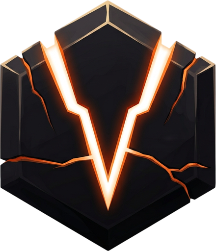

Vessara
Jeu de cartes à collectionner
Dans Vessara, les deux joueurs posent leurs cartes en même temps. Pas d'attente, pas de tour par tour : chaque manche est un pari sur ce que l'autre va jouer.
Des créatures et des légendes de cinq univers s'affrontent : le Nord, la Grèce, l'Égypte, le Japon et les contes. Chaque carte a un effet qui lui est propre, mis en scène par une animation de pose.
150 cartes
Cinq raretés, des illustrations à variantes, et un effet de lumière différent pour chaque carte.
Parties rapides
Dix manches au plus. Le premier à valider deux objets de victoire gagne.
Une campagne qui t'apprend
« Le Sacre des Mythes » : sept missions scénarisées qui servent de tutoriel et te font gagner tes premières cartes.
Où en est le jeu ?
Vessara est en test fermé, sur Windows uniquement. Il est développé en continu, par une seule personne, et chaque nouvelle version est racontée dans le journal de développement.
Tu veux voir les règles avant de te lancer ? Elles sont expliquées sur la page Comment jouer.